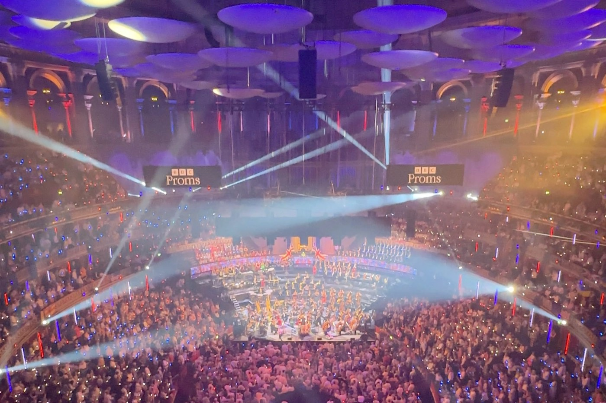

진행 방식: 공연 전과 공연 중, 그리고 공연 뒤.
-
미리 준비하기
더블린의 공연을 고릅니다. 어떤 곡인지, 공연장에서는 어떻게 하는지 미리 알아봅니다.
-
함께 가기
소그룹으로 함께 가고, 공연 중에도 곁에서 안내합니다.
-
다녀와서 나누기
들은 것을 함께 이야기합니다. 정답은 없습니다.
미리 알아 두실 것: 첫 음악여행 전에.
- 어떤 공연을 안내했나요?
- 국립 콘서트홀 인터내셔널 시리즈와 국립교향악단, TU Dublin 필하모닉 같은 공연입니다.
- 몇 명이 함께 가나요?
- 2025년 12월에는 여섯 명이 국립 콘서트홀 음악회에 함께 갔습니다.
- 아일랜드에 온 지 얼마 안 됐어요. 괜찮을까요?
- 네. 아일랜드에 처음 온 분도 반기고, 영어와 한국어로 이야기합니다.
그 자리에서: 객석에서 본 공연장.

기록: 지금까지 안내한 공연.
안내한 공연과 함께 간 음악회를 날짜순으로 모았습니다.
- 2025년 9월 30일 NCH 인터내셔널 시리즈. 치네케! 오케스트라국립 콘서트홀, 더블린참가자에게 안내, 단체 관람 준비
- 2025년 10월 7일 NCH 인터내셔널 시리즈. 스티븐 허프와 비아노 4중주단국립 콘서트홀, 더블린참가자에게 안내, 단체 관람 준비
- 2025년 10월 11일 TU Dublin 필하모닉TU Dublin 콘서트홀참가자에게 안내, 단체 관람 준비
- 2025년 12월 5일 함께하기 (1): 함께 간 연주회국립 콘서트홀, 더블린열다섯 번째 모임, 공연장에서
- 2026년 1월–2월 국립 교향악단, RIAM 피아노 시리즈, RTÉ 콘서트 오케스트라국립 콘서트홀과 RIAM, 더블린참가자에게 안내, 단체 관람 준비
함께하기: 음악여행에 함께하세요.
한 줄이면 됩니다. 이런 것을 적어 주시면 도움이 됩니다:
- 이름
- 편한 요일과 시간
- 듣고 싶은 음악 (선택)
- 미리 확인할 접근성 필요 (선택)
- 편한 언어: 영어 또는 한국어